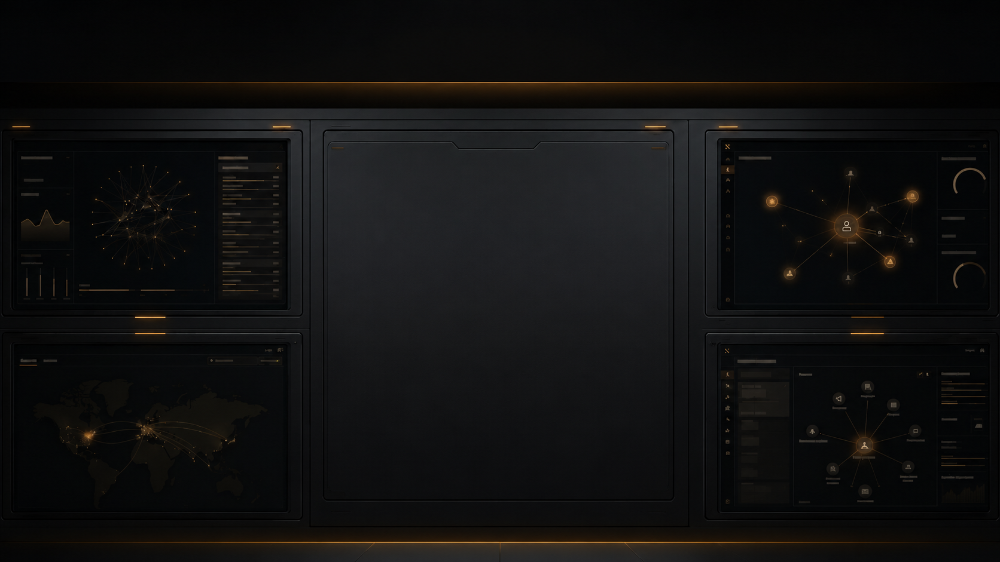

Stable identity
An agent cannot be trusted if it becomes a different thing every session. CHIMERA gives the agent persistent identity, memory structure, behavioral continuity, and persona coherence over time.
Open BRUNEL
One side makes the agent recognizable. The other makes its actions accountable.
An agent cannot be trusted if it becomes a different thing every session. CHIMERA gives the agent persistent identity, memory structure, behavioral continuity, and persona coherence over time.
Open BRUNELAn agent cannot be trusted if it can act without consequence. CONTROL TOWER gives operators review, escalation, logging, human override, and earned autonomy.
Open CONTROL TOWERStable identity lets an agent become recognizable. Tower control makes its actions accountable. Together, they give agents a path to earn autonomy.
Request Demo